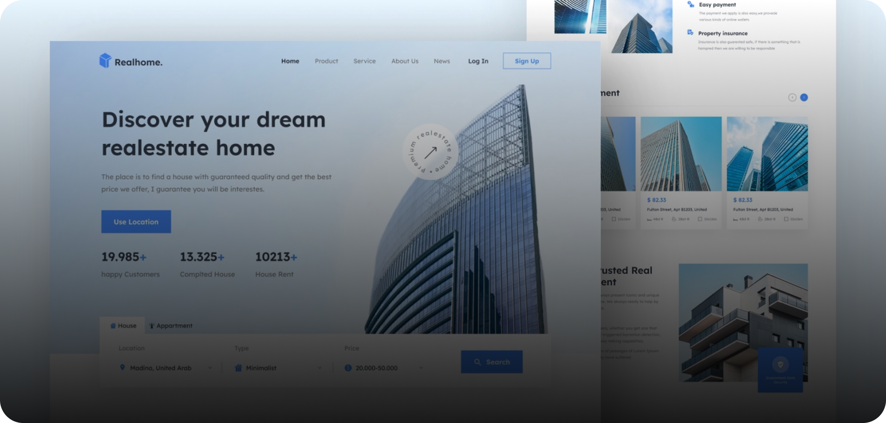
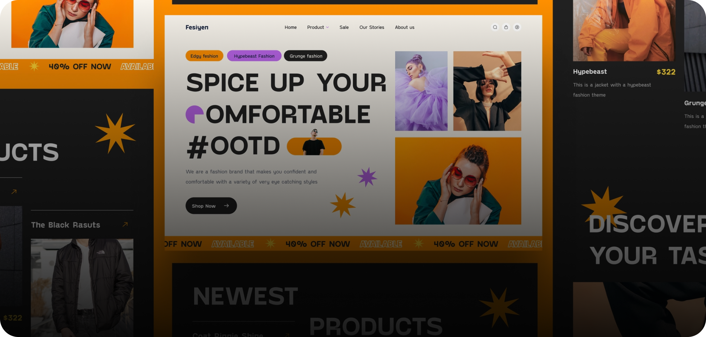
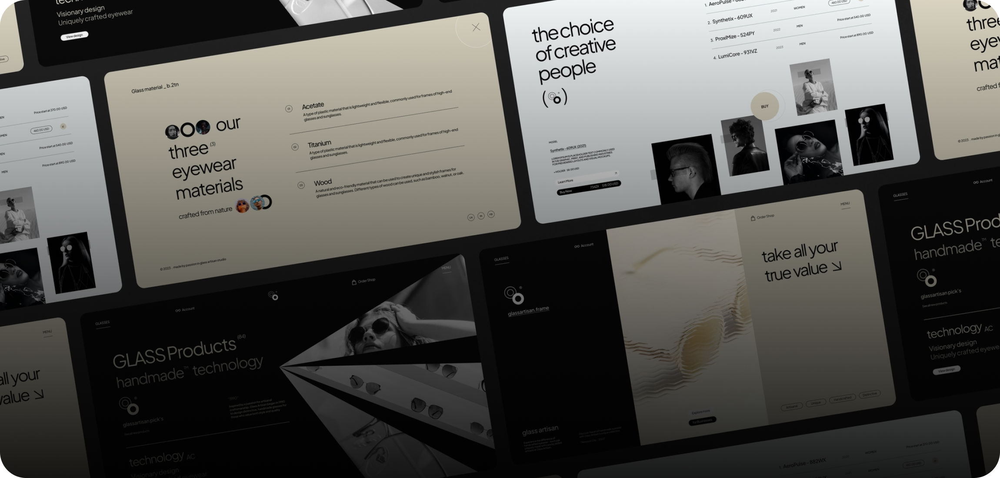

Привет, я Саша —
Разрабатываю имиджевые сайты для малого и среднего бизнеса, которые повышают престиж компании и позволяют выделиться на фоне конкурентов
- Самые свежие проекты

Realhome
дизайн,верстка, настройка

GLASS
разработка интерфейса

Fesiyen
разработка интерфейса
- Мои компетенции
HTML и CSS
это основа фронтенд разработки. Умение создавать и правильно
структурировать HTML-документы, а также применять стили к этим
документам на CSS, является обязательным навыком для каждого
фронтенд разработчика.
JavaScript
это язык программирования, который используется для создания
динамического и интерактивного пользовательского интерфейса.
Хороший фронтенд разработчик должен быть знаком с основами
JavaScript, включая работу с DOM-деревом, асинхронными
запросами и манипуляцией данными на стороне клиента.
Работа с библиотеками и фреймворками
фронтенд разработчики должны быть знакомы с различными
библиотеками и фреймворками, такими как React, Angular, Vue и
другими. Умение использовать готовые решения, адаптировать их
под нужды проекта и расширять их функциональность,
является очень важным навыком.
Разработка для мобильных
устройств и адаптивная верстка
фронтенд разработчики должны быть знакомы с различными
библиотеками и фреймворками, такими как React, Angular, Vue и
другими. Умение использовать готовые решения, адаптировать их
под нужды проекта и расширять их функциональность,
является очень важным навыком.
- Помогаю реализовать
широкий спектр задач

Разработка сайта под ключ
Это создание дизайн веб-сайтов, созданный для удобства
пользователя и решения бизнес-задач
Сайты должны быть понятными и удобными, ведь чем понятнее
сайт, тем быстрее пользователь совершит целевое действие

Верстка сайтов
Это процесс создания HTML-документов и применения к ним
стилей на CSS. Фронтенд разработчик может помочь создать
привлекательный и удобный интерфейс для вашего сайта

Разработка мобильного интерфейса
Это процесс создания интерактивных элементов на странице
с помощью JavaScript. Фронтенд разработчик может помочь
создать динамический и удобный пользовательский интерфейс
для вашего сайта или приложения.